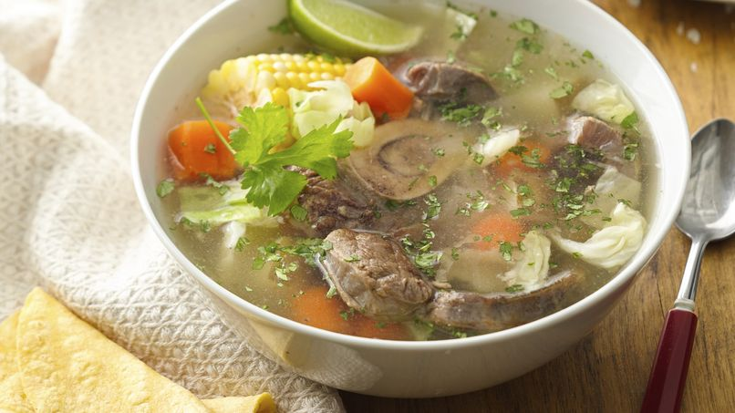

Caldo de Res
Sumérgete en el delicioso y reconfortante mundo de nuestro caldo de res, una sopa abundante y llena de sabor que deleitará tus sentidos y calentará tu corazón. Elaborado con los cortes más tiernos de carne de res, verduras frescas y especias tradicionales, nuestro caldo de res es una celebración de la cocina guatemalteca.
Cada cucharada de nuestro caldo te transportará a las cocinas hogareñas de Guatemala, donde se preparan con amor y cuidado recetas transmitidas de generación en generación. La carne de res se cocina a la perfección hasta alcanzar una textura suave y jugosa, mientras que las verduras se vuelven tiernas y sabrosas en el caldo aromático.
esta disponible por tan solo Q45.00
